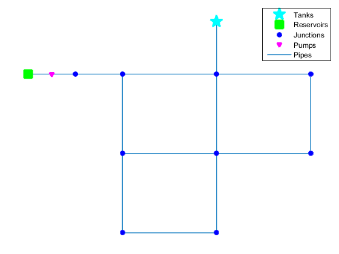
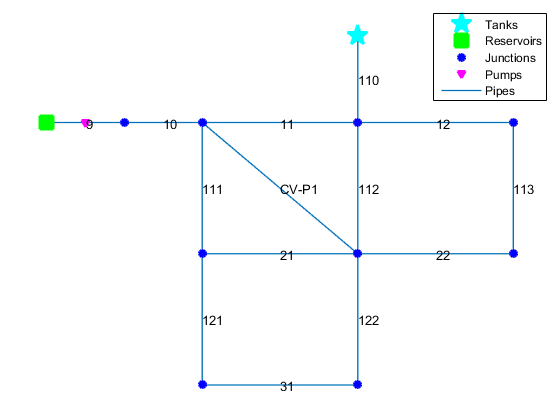
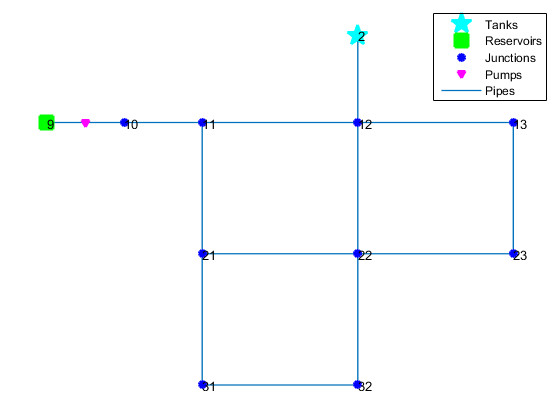
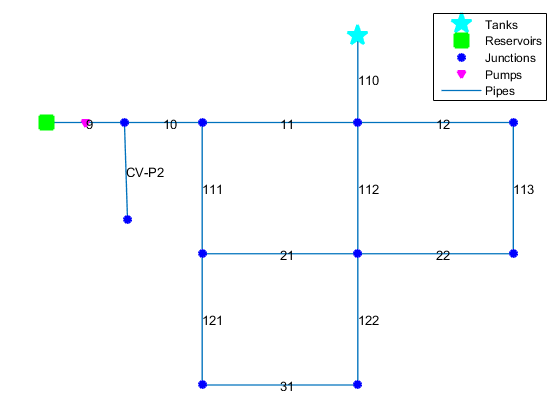

Contents
Example 1: Add CV PIPE
d=epanet('Net1.inp');
disp('Add a CV pipe')
d.plot;
fromNode = d.getNodeNameID{2};
toNode = d.getNodeNameID{6};
index=d.addLinkPipeCV('CVPipe',fromNode,toNode);
d.plot('links','yes');
d.unload;
EPANET loaded sucessfuly.
Add a CV pipe
EPANET Class is unloaded

Example 2: Add CV PIPE with Bin Functions
d=epanet('Net1.inp');
d.Binplot();
[errcode]=d.addBinCVPipe('CV-P1',fromNode,toNode,1000,10,100);
d.plot('links','yes');
d.unload;
EPANET loaded sucessfuly.
EPANET Class is unloaded

Example 3: Add CV PIPE with Bin Functions addBinJunction
d=epanet('Net1.inp');
d.Binplot('nodes','yes');
newID='J1';
[x,y]=ginput(1);
ToNodeID='10';
newElevation=500;
newBaseDemand=0;
newDemandPattern='1';
newPipeID='CV-P2';
newLength=1000;
newDiameter=10;
newRoughness=100;
Code='CVPIPE';
errcode=d.addBinJunction(newID,x,y,newElevation,newBaseDemand,newDemandPattern,newPipeID,...
ToNodeID,newLength,newDiameter,newRoughness,Code);
d.plot('links','yes');
d.unload;
EPANET loaded sucessfuly.
EPANET Class is unloaded
 